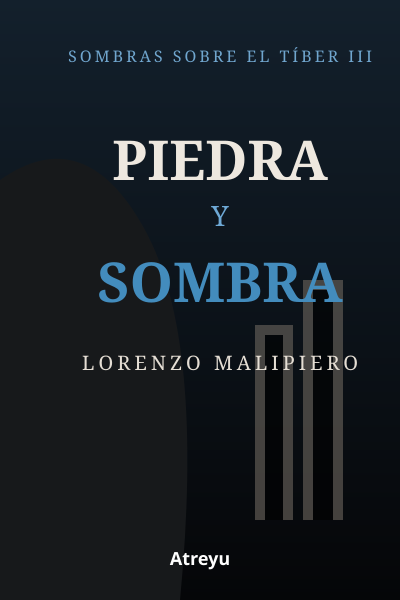
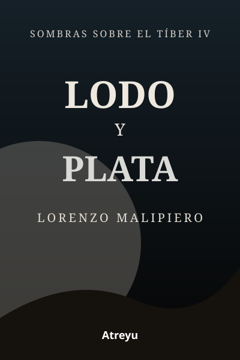
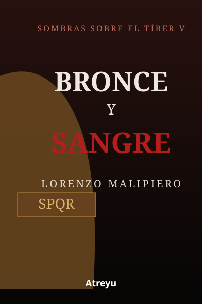
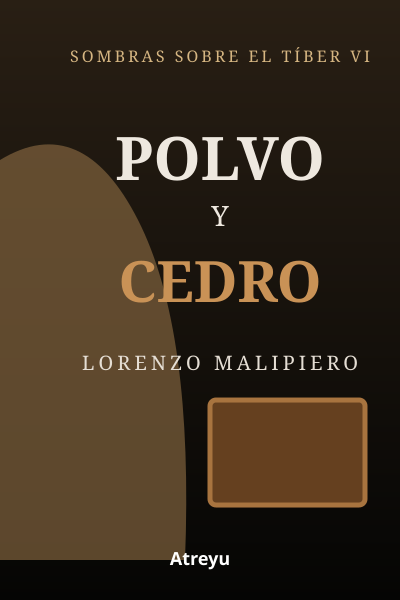

Mármol y ceniza
Un arquitecto asesinado, un yacimiento bajo el Aventino y la primera huella de una red más profunda.

La verdad no estaba oculta. Estaba mal clasificada.
Seis thrillers conectados por una investigación que cruza Roma, el Vaticano, Jerusalén, Capadocia, Rodas y Suiza. Crimen, patrimonio, arqueología, archivos y una lucha por decidir qué versión del pasado merece sobrevivir.
Sombras sobre el Tíber combina el suspense del thriller con investigación criminal, arqueología y procedencia documental. El misterio no depende de una gran revelación arbitraria, sino de pruebas, archivos, restauraciones, contradicciones y decisiones humanas.
«Los secretos más peligrosos no siempre se esconden. A veces se archivan.»

Autor: Lorenzo Malipiero. Género: thriller contemporáneo, investigación y conspiración histórica. Primer libro: Mármol y ceniza. Último: Polvo y cedro. Lectura recomendada: del volumen I al VI.
Un arquitecto asesinado, un yacimiento bajo el Aventino y la primera huella de una red más profunda.
Un cardenal muerto deja una carta que conduce al Vaticano, a Fiamma Alberti y a la Lupa.

VOLUMEN IIIJerusalén y Capadocia expanden la investigación hacia archivos, restauraciones y versiones enfrentadas.

VOLUMEN IVLa red contraataca y la amenaza deja de ser únicamente documental.

VOLUMEN VRodas, el Egeo y Bronzo ponen a prueba linajes, herencia y continuidad histórica.

VOLUMEN VIUna caja de cedro y documentos de posguerra conducen al cierre de la saga.


Una serie completa de seis thrillers de Lorenzo Malipiero que combina investigación criminal, conspiración histórica, arqueología, archivos y patrimonio cultural.
Mármol y ceniza, Óxido y oro, Piedra y sombra, Lodo y plata, Bronce y sangre y Polvo y cedro.
Sí. Los seis volúmenes forman un arco completo.
La acción principal es contemporánea. El pasado, los archivos y la arqueología son objetos de investigación.
Roma, Vaticano, Jerusalén, Capadocia, Rodas, el Egeo, Italia y Suiza.
La landing queda preparada para incorporar los enlaces de Amazon Kindle y papel de cada volumen en cuanto estén disponibles.
Ver la serie completa